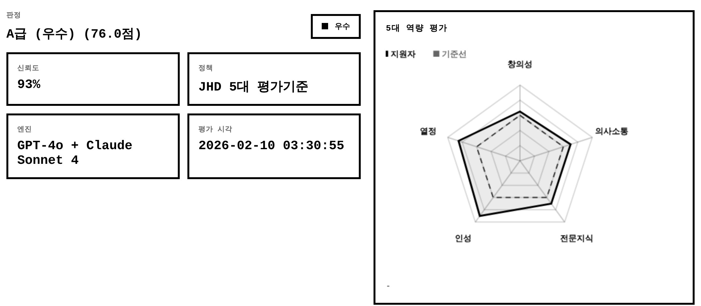
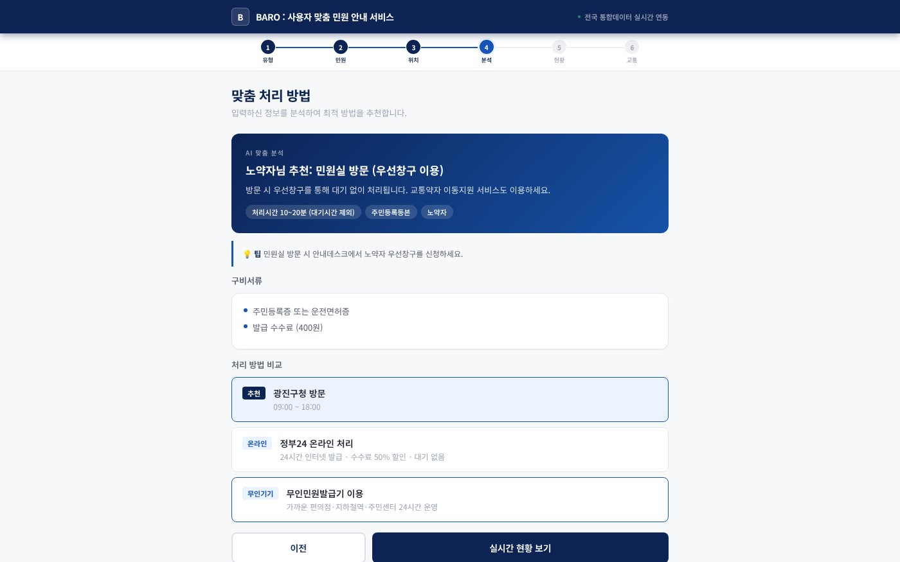
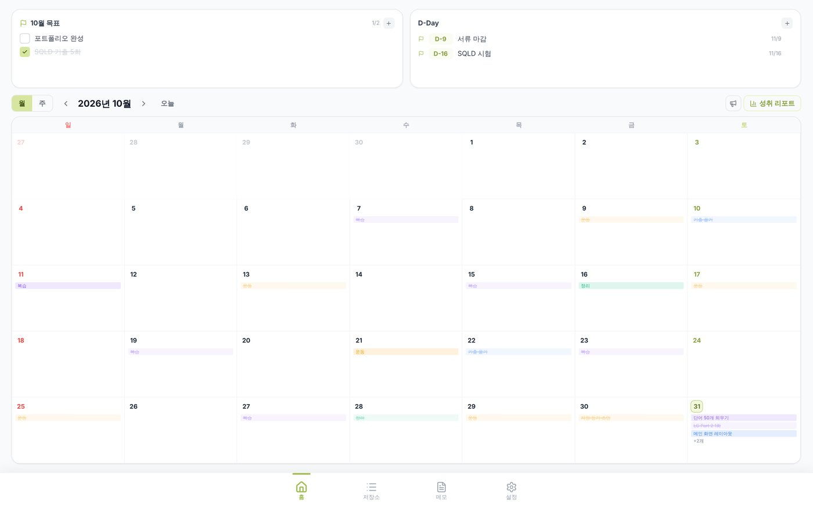
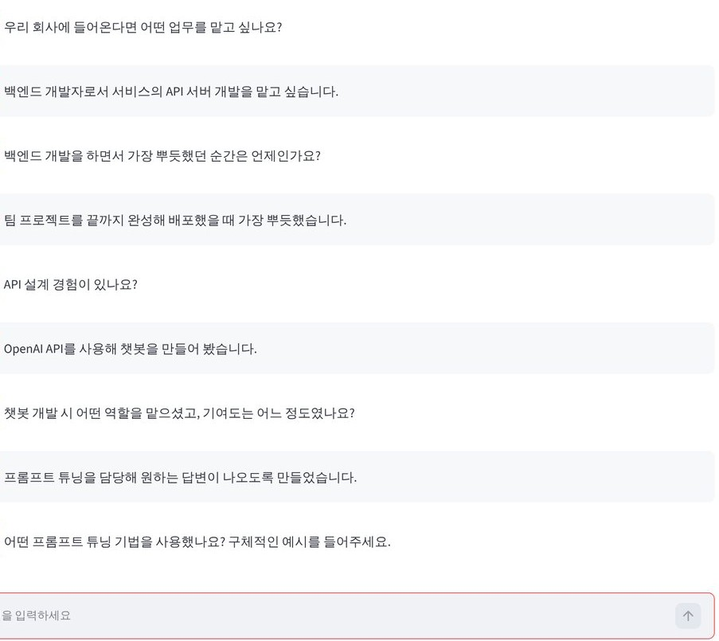
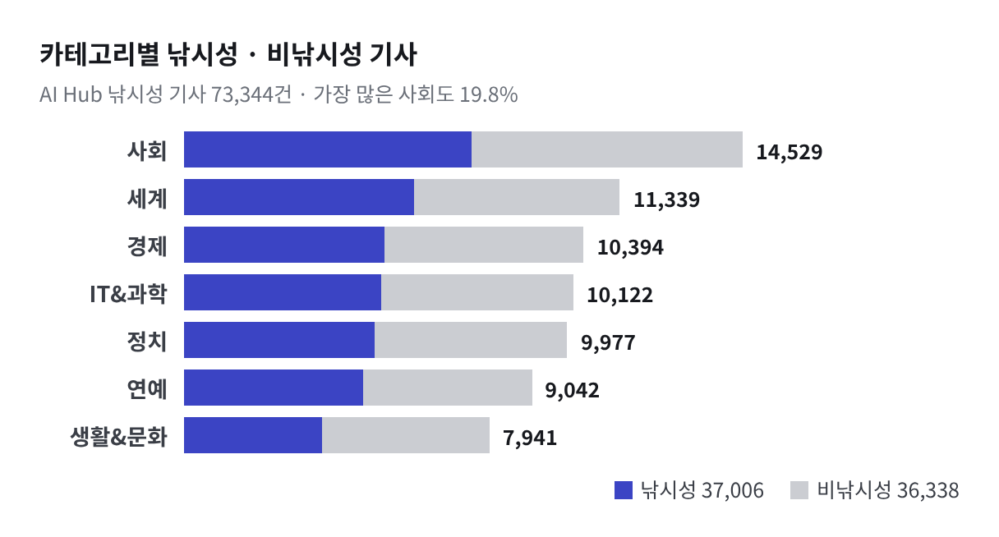

검증하는 AI
AI 결과를 그대로 내보내지 않고 확인하는 장치를 만듭니다. LLM에 보내기 전 민감정보를 찾아내는 모델을 학습하고, 같은 이력서를 바꿔 가며 다시 채점하는 점검 도구를 만들고, 신뢰도 점수가 거꾸로 계산되던 오류를 고쳤습니다 (2026.10 고도화).
→ 01 Veil AI · 02 AI 채용 평가AI 결과를 그대로 쓰지 않고, 검증해서 서비스로 만듭니다
민감정보 탐지 모델 학습, LLM 채점 신뢰도 점검, 공공데이터 서비스 1인 배포, 보행 위험 후보지 분석까지 직접 만들었습니다.
검증하는 AI · 데이터로 판단 · 끝까지 만들기
About
AI 결과를 그대로 내보내지 않고 확인하는 장치를 만듭니다. LLM에 보내기 전 민감정보를 찾아내는 모델을 학습하고, 같은 이력서를 바꿔 가며 다시 채점하는 점검 도구를 만들고, 신뢰도 점수가 거꾸로 계산되던 오류를 고쳤습니다 (2026.10 고도화).
→ 01 Veil AI · 02 AI 채용 평가데이터를 직접 만들고, 나눠서 비교한 뒤 결정합니다. 학습 문장 49,576개로 모델 4종을 같은 조건에서 비교했고, 과거 자료로 고른 후보지를 이후 실제 사고로 채점했습니다.
→ 01 Veil AI · 04 경남 보행안전기획부터 배포까지 혼자 끝내고, 배포한 뒤에도 다시 열어 고칩니다. 1인 개발로 배포한 민원 안내 서비스의 버스 노선 조회를 3.18초에서 0.30초로 줄였습니다 (2026.10 고도화).
→ 03 BARO · 05 MoaProjects

LLM에 보내기 전에 민감정보부터 가립니다
#NER파인튜닝#데이터셋구축#KLUE-RoBERTa#LLM보안
직원이 생성형 AI에 고객 정보 · 계좌번호 · 사내 문서명을 그대로 입력하고, 외부 LLM으로 나간 문장은 회사가 확인할 수 없음
형식이 정해진 정보는 규칙(정규식)으로, 이름 · 조직 · 문서명은 AI 모델(NER)로 찾아 가린 문장만 LLM에 전송
학습 문장 49,576개 설계 · 구축, 한국어 모델 4종 비교 → KLUE-RoBERTa F1 96.14%, 평균 처리 0.066초

점수가 아니라 신뢰를 평가합니다
#신뢰성감사#멀티에이전트#FlaskAPI#PDF리포트
AI 서류 평가는 왜 그 점수인지 설명하지 않고, 형식 · 키워드에 따라 점수가 흔들릴 수 있음
평가 · 설명 · 검증 에이전트가 기준별 점수와 근거를 내고, 점수를 믿어도 되는지 함께 판정. 3차 프로토타입에서는 불합격선은 넘었지만 신뢰성 지표가 하나라도 60 미만이면 합격 대신 보류
같은 이력서를 바꿔 가며 다시 채점하는 신뢰성 감사 프로토타입, Flask API 서버 · PDF 리포트, 2026.10 고도화에서 서버는 안전 점수로 보내고 화면은 위험도로 받아 거꾸로 계산되던 최종 신뢰 점수를 바로잡음 (같은 입력 24.6 → 73.8)

헛걸음 없이, 방문 전에 처리 방법부터
#공공데이터API#서버리스#LLM추천#반응형웹
민원 처리에서 가장 큰 불편은 불필요한 방문과 예측할 수 없는 대기. 고령층 · 장애인 · 영유아 동반 보호자에게는 헛걸음 한 번이 큰 부담
공공데이터 실시간 API 4종 + Claude로 방문자 유형에 맞는 처리 방법 · 구비서류 · 주변 민원실 대기 · 버스를 한 화면에 안내
인증 키를 서버에만 두고 기관마다 다른 응답 형식을 한 곳에서 통일. 2026.10 고도화에서 버스 노선 반복 조회를 3.18초에서 0.30초로 단축

사고 기록을 겹쳐 먼저 점검할 곳을 고릅니다
#공공데이터#좌표분석#위험점수설계#백테스트
경남 18개 시군 도로를 모두 점검할 수 없고, 사고 수로 고르면 인구를 그대로 따라가 큰 도시만 뽑힘
위험자료 9종을 위험 기록 7,174곳으로 정리하고, 지점 반경 500m 안 근거 4가지를 겹친 점수로 시군별 10곳씩 180곳 선정
2021년까지 자료로 고르고 이후 실제 사고로 채점: 사고 557건 중 140건(25.1%)이 후보지 안, 무작위 생활시설의 약 4배 (2026.10 고도화)
More

날짜 없는 할 일은 저장소에, 할 날이 되면 오늘로
자세히 보기 →
AI가 질문을 만들고, 고정 기준으로 비교하는 모의 면접 · 기획 · 백엔드
자세히 보기 →
낚시성 기사 탐지 AI를 평가하는 데이터 구축 · 품질 검증
자세히 보기 →
1인 가구 반려견의 불안 행동을 카메라로 감지해 바로 달래 주는 기기
자세히 보기 →Skills
프로젝트에서 직접 써 본 기술입니다. 두 개 이상의 프로젝트에서 쓴 기술은 테두리로 표시하고, 옆에 프로젝트 번호를 적었습니다.
프로젝트 번호 01 Veil AI02 AI 채용 평가03 BARO04 경남 보행안전05 Moa번호 없음: 그 밖의 프로젝트 (Oreum · TRAITHON · 반려견 분리불안 완화 AIoT)
Awards & Education